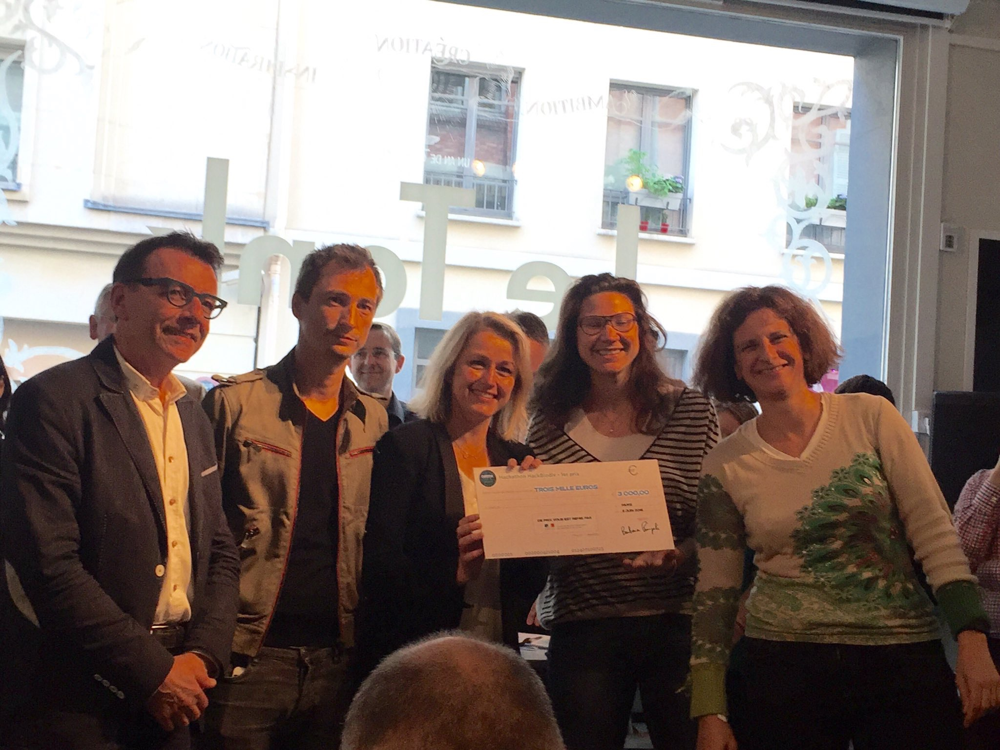

Invasiv'alerte
Détectons les espèces envahissantes ensemble !
Lauréat du #hackbiodiv
Equipe lauréate du hackathon organisé par le ministère de l'environnement et de nombreux partenaires pour préserver la biodiversité.

Quelle équipe !
Ana | Jean-Michel | Laurence | Stéphane
"Je pense à Denise qui est inquiète pour ses ruches. Que faire pour l'aider et préserver son activité lorsque des frelons asiatiques détruisent ses ruches et les abeilles qui produisent son meilleur miel ?"
 Laurence Initiatrice du projet
Laurence Initiatrice du projet